Projects I completed during my Mechanical Engineering studies.
Minor
Design of a racing sailing yacht.
Bachelor's Thesis
The working of a directional External Human-Machine Interface in near-collision tested with a coupled simulator.
Internship
Predicting the effect of weather conditions on the drying rate of grass using a neural network model.
Master's Thesis
Evaluating the Efficacy of Ultrasonic Friction Modulation for Spatial Guidance for Blind Individuals.
Personal Projects projects
Projects I started out of interest
Machine Repair
With great technical understanding a lot of appliances can be fixed.
Digital platform Design
Creating fully functioning apps or webpages from scratch.
3D Printing Solutions
Solving problems incluiding complex shapes using 3D moddeling and 3D printing.
Contact
Lucas Overbeek
lucasoverbeek@hotmail.com
Espresso Machine
Restoration
.
In this project, I completely revised an industrial coffee machine, driven by a fascination with these devices and a passion for a nice brewed cup of coffee. I Acquired a defective machine and started troubleshooting the system, thereby gaining hands-on experience and problem-solving skills along the way. It was really rewrading when the machine was fully functionality again, with the ultimate reward of an exceptional cup of coffee.
App Development
A Project to keep track of house hold inventory
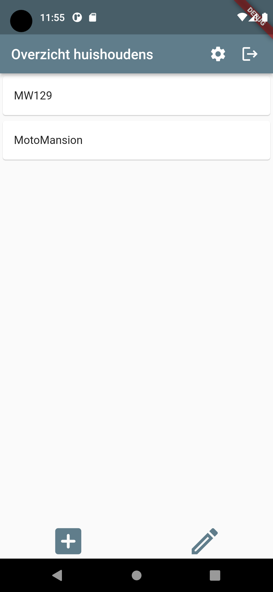
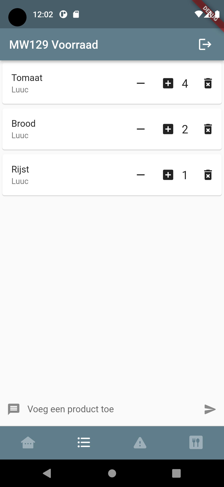
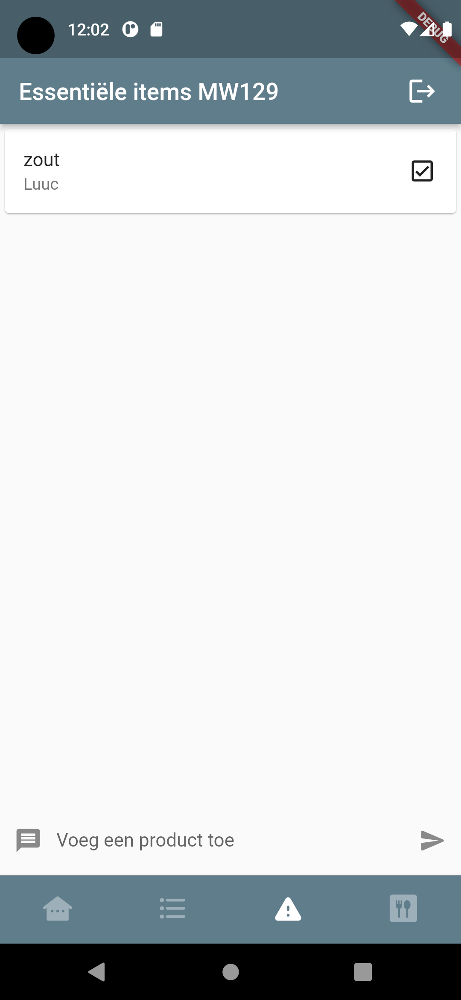
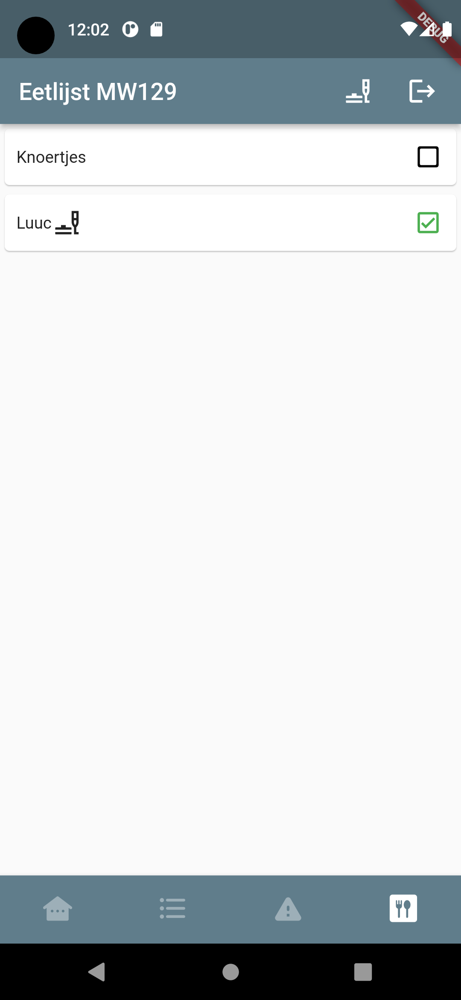
In larger house holds it can be difficult to keep track of what's present. To get a better insight I created an App was created where everyone could update the information to ensure an up-to-date overview of the inventory.
Complex Shape Design
Tailor-made 3D Solutions.
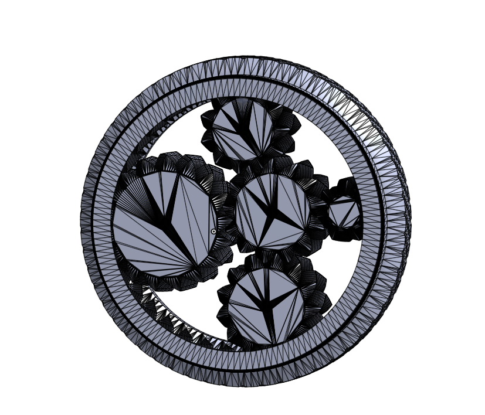
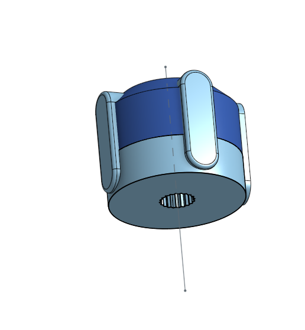
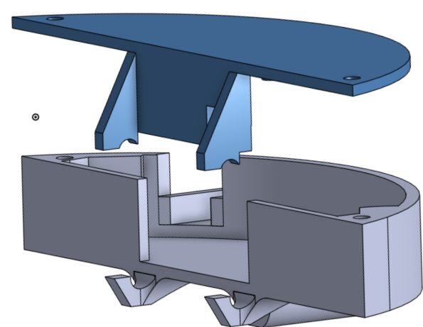
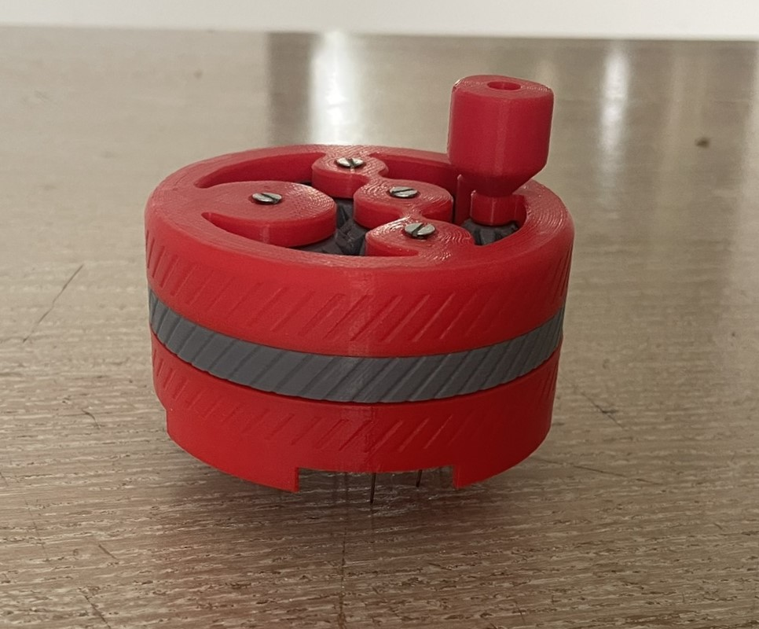
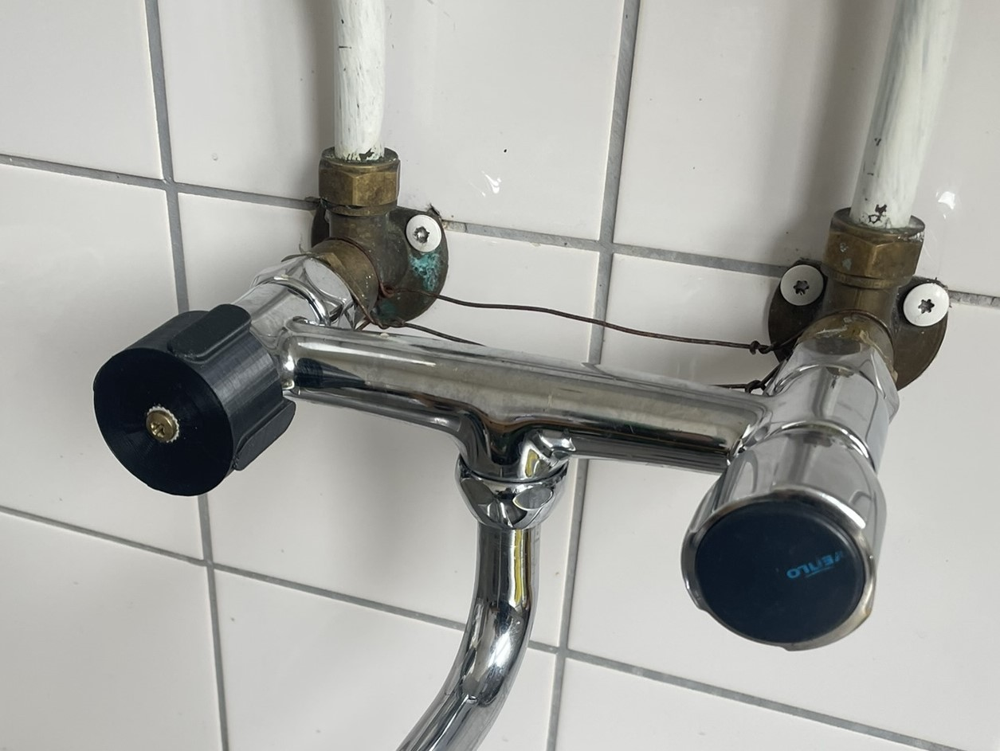
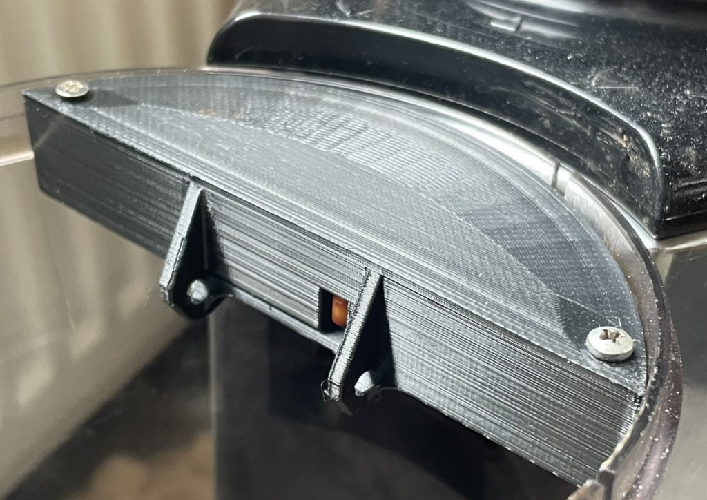
Tailor-made solutions are often essential when dealing with complex shapes. These challenges can be effectively tackled by using CAD programs to craft a 3D solution. Once the solution is designed, it can be materialised using a 3D printer
Minor Project
Design en building of a racing yacht
.
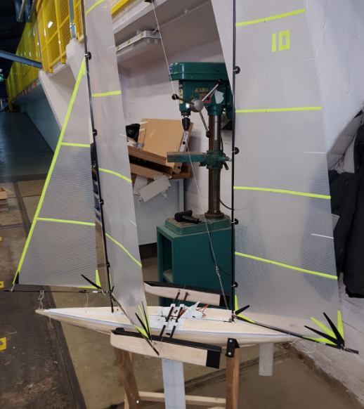
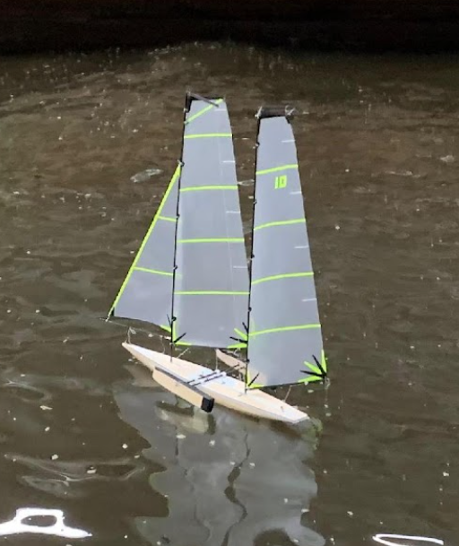
In our minor program, the challenge was to design and construct a sailing yacht tailored specifically for competitive racing. Within predefined constraints regarding dimensions such as height, width, and length, our objective was to optimize the vessel's performance for speed and agility. Throughout the process, we crafted our yacht to navigate three distinct race tracks, competing against other participants in the minor. Our sailing yacht stood out with its innovative dynamic hull design. In the middel a dynamic system was added so we could get extra stability if the ship was turning too much towards the water. This way we had the stability of a catamaran but the agility of a single hull ship. As a result of our innovative approach and strategic implementation, we secured an impressive second-place finish overall in the competition, underscoring the effectiveness of our design and engineering efforts.
Bachelor's thesis
Investigation in a virtual environment
.
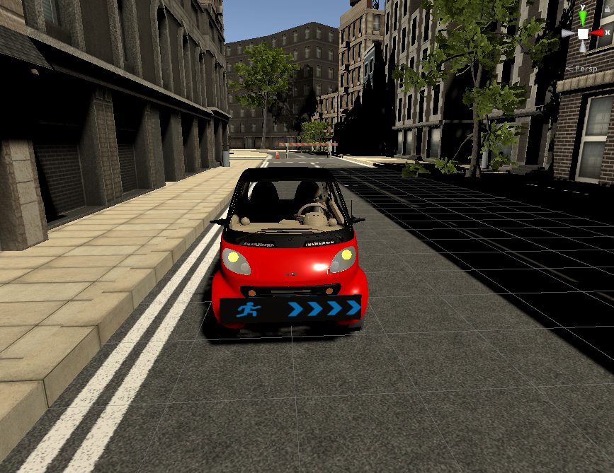
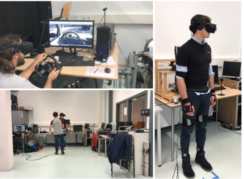
For our bachelor's thesis, we investigated the potential use of External Human-Machine Interfaces (EHMIs) in near-collision scenarios. As autonomous vehicles become the norm, there's a possibility of reduced communication between human participants and the vehicle. EHMIs could serve as a bridge to enhance this communication. However, we questioned whether EHMIs could effectively improve situations in near-collision scenarios.
To investigate, we constructed a virtual reality environment where two participants could interact. One participant acted as the driver navigating a virtual city, encountering corners with poor visibility where a pedestrian would nearly be hit. The other participant assumed the role of the pedestrian. Equipped with a full-body suit, we meticulously measured the pedestrian's responses.
Our findings revealed that the pedestrian's reactions were primarily instinctual, indicating that they did not significantly rely on the EHMI cues.
Internship
Devoloping an algorithm for predicting drying rates.
.
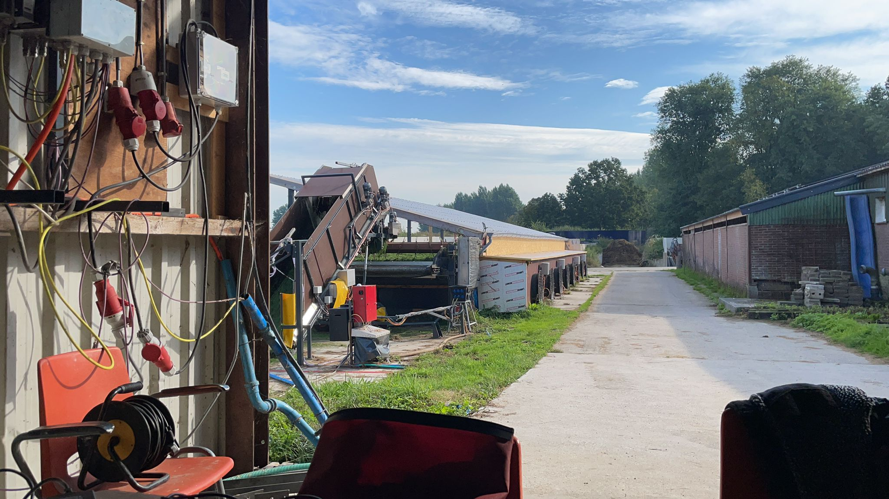
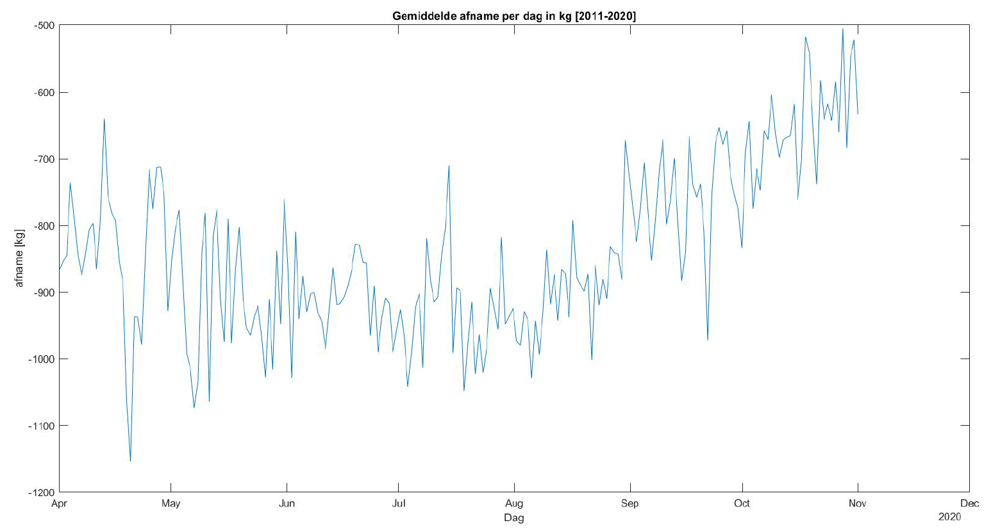
In the agritech sector, the integration of grass drying capabilities with autonomous grass mowing machines presents a promising innovation. To assess the effectiveness and scalability of this integrated system, we conducted an investigation to predict the amount of grass dried per hour based on varying weather conditions.
To accomplish this, we developed a feedforward neural network, a powerful machine learning model known for its ability to analyze complex patterns in data. This neural network was trained using meteorological data such as temperature, humidity, wind speed, and solar radiation, along with corresponding measurements of grass drying rates.
Master's Thesis
Investigating the use of tactile feedback.
.
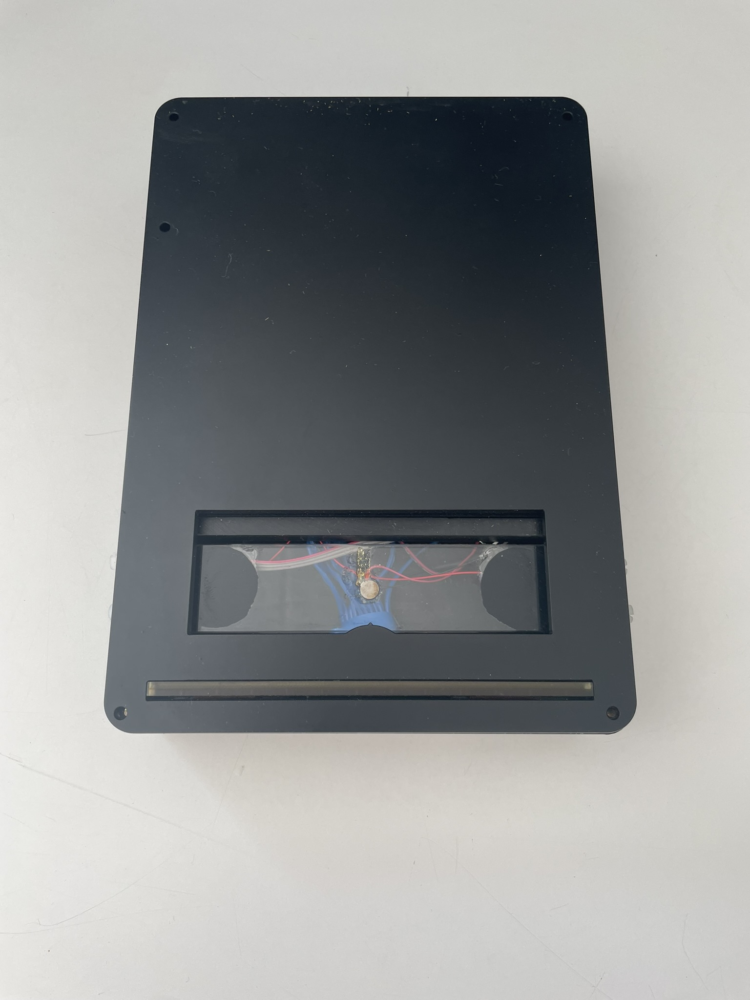
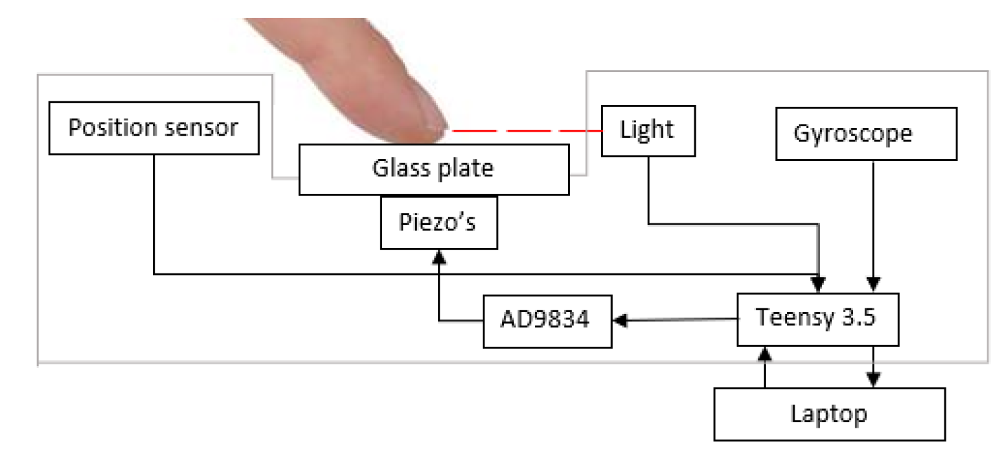
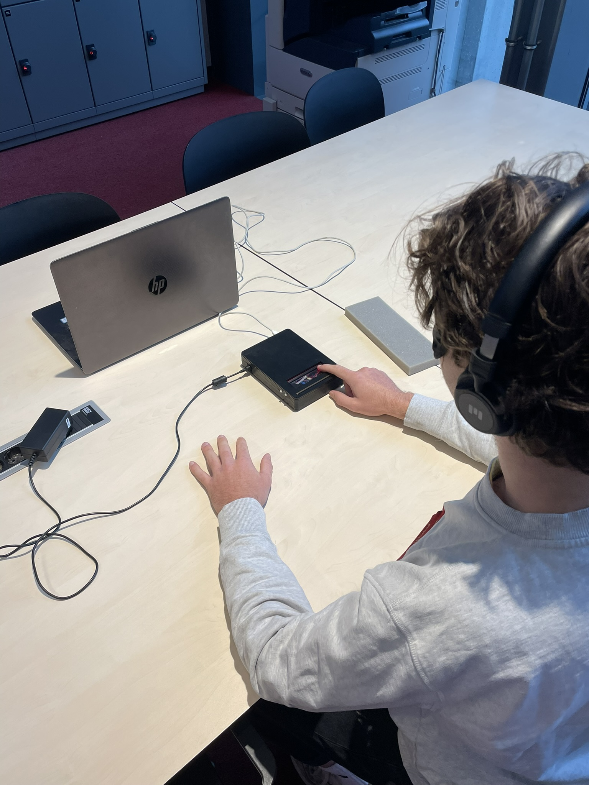
In today's touchscreen-dominated landscape, accessibility remains a significant concern for visually impaired individuals due to the lack of tactile guidance essential for effective touchscreen interaction. Our research delves into whether tactile cues can not only aid in navigating touchscreens but also assist in orientation tasks.
Our innovative approach employs a directional friction modulation rendering method, designed to facilitate finger movement and orientation. We explore the efficacy of this tactile directional cue through tracking and orientation tasks. The shape of the tactile cue is determined by a parameter, σ, which we optimize in our study. Additionally, in the orientation experiment, we investigate the impact of different Field of Feeling ranges, representing the maximum perceivable angles on the actuated glass plate.
Our methodology involves blindfolded participants in experiments to assess their ability to interpret and respond to tactile cues generated by an ultrasonic friction modulation device. We employ quantitative measures such as response time and directional accuracy, along with qualitative feedback from questionnaires, to capture participants' experiences with the tactile feedback system.